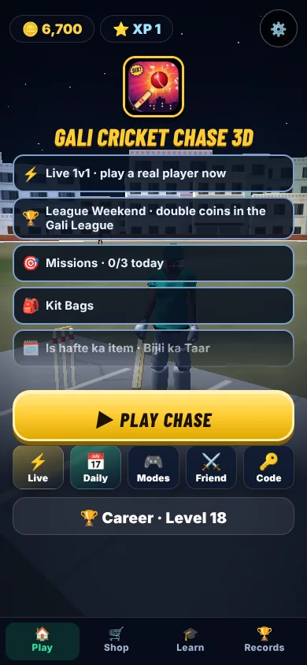
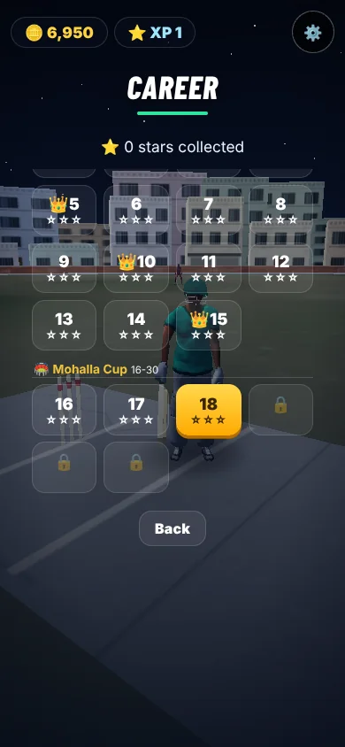
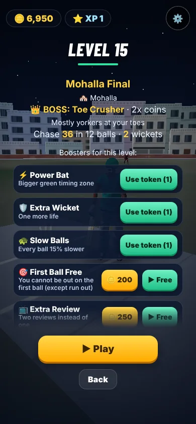
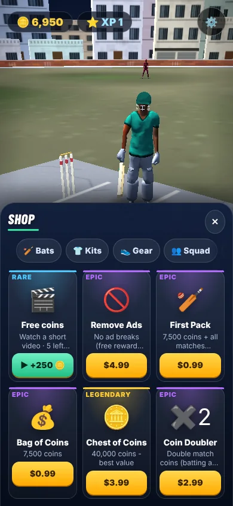

Swipe to hit
Swipe the way you want the ball to go. Perfect timing means bigger shots; mistime it and the bowler wins.
Gali Cricket Chase 3D is street cricket on your phone. Swipe in any direction to drive, pull, cut or scoop, time it well and loft it over the rooftops for a SIX. Beat the boss bowlers, win the Mohalla Cup and take on real players online.
Proper cricket rules, the chaos of the gali, and players who move like real batters, bowlers and keepers.
Swipe the way you want the ball to go. Perfect timing means bigger shots; mistime it and the bowler wins.
From your own street to the Mohalla Cup stadium and the old Qila Ground. Every level has its own twist, and a boss bowler waits every fifth level.
Bowled, caught, LBW, stumped, run out and hit wicket. Review a decision with ball tracking, an edge check or the third umpire.
One tip one hand, over the roof is out, the side wall is two, hit the window and you are out. Power cuts, rain and a cow on the pitch included.
Online Duel: bat the same 12 balls another player faced and beat their score, then climb the leaderboard from Bronze to Legend. Live 1v1 Super Overs are on the way.
17 squad characters, bats, kits, shoes, gloves and pads that change how you play, your own look and team name, and eight celebrations after a six.
Screens from the current test build, as they look on a phone.




A two-minute chase on the bus or a full match in the evening.
A free game that respects your time, your phone and your data.
Your first games have no ads at all. After that an ad break can come only after a match, at most every third game. Rewarded ads are always your choice.
Every bat and kit in the shop can be bought with coins you win by playing. Nothing random is sold for real money.
A small download that plays offline, with a low-graphics mode for older phones. Online play needs the internet.
Your progress stays on your phone. Online play uses an anonymous ID, and you can delete your online data at any time. Privacy policy
Gali Cricket Chase 3D is in testing now and is coming to Google Play for Android. This page will link straight to the store when it is out.
Yes. The game is free to play with optional ads. You can buy coin packs, a Starter Pack or Remove Ads through Google Play if you want to, but you never have to.
It is made for budget Android phones and has a low-graphics mode. Your phone needs 3D graphics support (almost every phone from the last several years has it).
No. Career, Daily Challenge, the league and every other mode work offline. Only Online Duel and live matches need a connection.
English, Roman Urdu, Urdu (اردو) and Hindi (हिन्दी). You choose one the first time you open the game and can change it in Settings.
In the game, open Online Duel and tap "Delete my online data". Without the game, email us. Everything else stays on your phone. See Delete your data.
We read every message and reply as soon as we can.
galigamesstudio@outlook.com